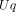
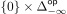
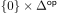
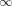

Proof of Proposition 1.1. We verify the conditions of the Barr–Beck–Lurie theorem
[Lur17, Theorem 4.7.3.5].
First we show that is conservative. We can argue in exactly the same way as
[GHK22, Proposition 4.4.5]. Suppose that is a morphism in such that  is
an equivalence in
is
an equivalence in  . Then is an equivalence in . One can factor as
where is a coCartesian lift of and is a morphism in the fiber above
. Since is coCartesian lift of an equivalence, it is an equivalence. Because of the
fiberwise monadicity assumption (iii), is an equivalence. Therefore is an equivalence
and is conservative.
. Then is an equivalence in . One can factor as
where is a coCartesian lift of and is a morphism in the fiber above
. Since is coCartesian lift of an equivalence, it is an equivalence. Because of the
fiberwise monadicity assumption (iii), is an equivalence. Therefore is an equivalence
and is conservative.
Now we will show that admits and preserves colimits of -split simplicial objects. Let
be a -split simplicial object, so that  extends to a diagram . Let
be the underlying diagram in . There is a morphism
which is the identity on  and carries to . It sends each
horizontal morphism to the unique morphism ![[n] → [− 1]](BarrBeckFamilies55x.svg) . Consider the
composite
. Consider the
composite
Now we will take a coCartesian lifts, using the exponentiation for coCartesian fibrations [Lur18,
Tag 01VG].
- Let be a coCartesian lift of to . Then is a natural transformation
between and a morphism , where is the image under of
.
- Let be a coCartesian lift of to . Then is a natural transformation
between and a morphism .
These natural transformations and are uniquely characterised by the property that their
components are coCartesian edges [Lur18, Tag 01VG]. Because of the assumption (i) that
preserves coCartesian edges, this unicity implies that . In particular
extends to the split simplicial object . By the fiberwise
monadicity assumption (iii), this implies that extends to a colimit diagram
such that is also a colimit diagram. By assumption (iv) and [Lur09, Proposition 4.3.1.10] it
then follows that and , when regarded as diagrams in and respectively, are -colimit
diagrams. Now we can argue as in [Lur09, Corollary 4.3.1.11]. We have a commutative
diagram
in which denotes the morphism which is the
identity on  and which carries to the cone point. Because the
left map is an inner fibration there exists a lift as indicated by the dashed arrow.
Consider now the map which is the identity on
and carries the other vertices of to the cone point. Let denote the
composition
and define . Then is a natural transformation from to which is
componentwise coCartesian. Then [Lur09, Proposition 4.3.1.9] implies that is a -colimit
diagram which fits into the diagram
By assumption (i), is a natural transformation from to which is componentwise
coCartesian. Hence [Lur09, Proposition 4.3.1.9] implies that is a -colimit diagram. The
underlying diagram of in extends to the split simplicial diagram and hence
admits a colimit in . Hence [Lur09, Proposition 4.3.1.5(2)] implies that and are colimit
diagrams in and respectively. Hence admits and preserves geometric realizations of
-split simplicial objects. □
[GHK22]Â Â Â David Gepner, Rune Haugseng, and Joachim Kock. -operads as analytic
monads. Int. Math. Res. Not. IMRN, (16):12516–12624, 2022.
[Lur09] Â Â Â Jacob Lurie. Higher topos theory, volume 170 of Annals of Mathematics
Studies. Princeton University Press, Princeton, NJ, 2009.
[Lur17] Â Â Â Jacob Lurie. Higher Algebra. Available at
https://www.math.ias.edu/~lurie/papers/HA.pdf, 2017.
[Lur18] Â Â Â Jacob Lurie. Kerodon. https://kerodon.net, 2018.
 . For all ,
the functor is conservative, and admits colimits of -split simplicial objects,
which preserves.
. For all ,
the functor is conservative, and admits colimits of -split simplicial objects,
which preserves.